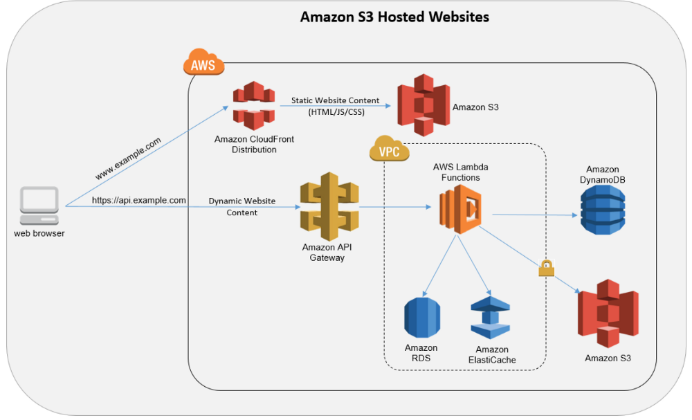
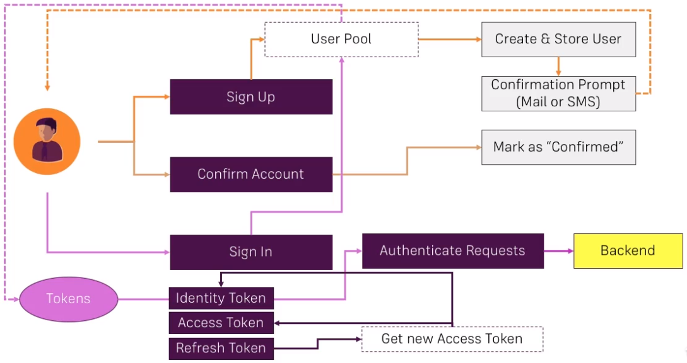

AWS Serverless APIs and Apps
Table of Contents
- 1 Get Started
- 2 Create an API with API Gateway and AWS Lambda
- 2.1 Create a New API
- 2.2 Handle CORS and
OPTIONSPreflight Request - 2.3 Create a HTTP Method
- 2.4 Connect Lambda Functions to API Gateway Endpoints
- 2.5 Access API from Web and Fix CORS Issue
- 2.6 Understand "Event" in Lambda Function
- 2.7 Forward Requests with "Proxy Integration"
- 2.8 Access Lambda Logs
- 2.9 Get Started with Mapping Templates
- 2.10 Extract Request Data with Mapping Templates
- 2.11 Map Response Data
- 2.12 Use Model and Validate Requests
- 2.13 Models and Mappings
- 2.14 Add
DELETEMethod Endpoint to the API - 2.15 Use Path Parameters
- 2.16 Access the API from the Web
- 3 Data Storage with DynamoDB
- 3.1 NoSQL vs SQL
- 3.2 Use DynamoDB with Lambda
- 3.3 Create a Table in DynamoDB
- 3.4 Create and Scan Items
- 3.5 Access DynamoDB from Lambda
- 3.6 Put Items into DynamoDB Table from Lambda
- 3.7 Set Permissions Right
- 3.8 Use API Gateway Data for Item Creation
- 3.9 Map the Response and Web Testing
- 3.10 Scan Data in DynamoDB from Lambda
- 3.11 Improve the IAM Permissions
- 3.12 Get a Single Item from DynamoDB via Lambda
- 3.13 Prepare Delete Permissions
- 3.14 Give Lambda Logging Permissions
- 3.15 Delete Items in DynamoDB via Lambda
- 3.16 Map DynamoDB Responses
- 4 Authenticate Users with Cognito and API Gateway Authorizers
- 4.1 How to Add Authentication to API Gateway
- 4.2 Understand Custom Authorizer
- 4.3 Create a Custom Authorizer Function
- 4.4 Use Custom Authorizers
- 4.5 Retrieve Users from Custom Authorizers
- 4.6 Create Cognito User Pool
- 4.7 Understand Cognito Auth Flow
- 4.8 Add Cognito to Frontend App
- 4.9 Add Signup to Frontend App
- 4.10 Add User Confirmation to Frontend App
- 4.11 Add Signin to Frontend App
- 4.12 Manage User State with Cognito
- 4.13 Use Cognito Authorizer with API Gateway
- 4.14 Pass the Right User ID to Lambda
- 4.15 Use Query Params & Cognito from Lambda
- 4.16 Pass Query Params from the Frontend
- 4.17 Pass User ID to the
DELETEEndpoint
- 5 Host a Serverless SPA
- 6 Beyond the Basics - An Outlook
- 6.1 Document an API
- 6.2 Other AWS Lambda Triggers
- 6.3 Run Node/Express App via Lambda and API Gateway
- 6.4 Pros and Cons of Serverless Node/Express MPA
- 6.5 Serverless Apps and Security
- 6.6 Get to Know the Serverless Framework
- 6.7 Get to Know SAM (Serverless Application Model) by AWS
- 6.8 Test Serverless Applications with LocalStack
- 6.9 Other Useful AWS Services
- 7 Links
1 Get Started
1.1 What is Serverless Development?
In serverless architecture:
- The frontend of the app can be a SPA (Single Page Application).
- The backend of the app doesn't run on traditional web and database servers, instead it runs completely on AWS (but without any EC2 instances).

Advantages of serverless arch:
- No capacity or scaling concerns (e.g. what CPU and RAM to use, how many servers to run). Serverless apps have unlimited on-demand capacity which scales automatically, and is paid for code executions.
- No maintenance efforts (e.g. update OS, prevent security issues). Serverless apps run on AWS managed infra.
1.2 AWS Signup and First Serverless API
Go to AWS API Gateway and create an API:
- Protocol: REST
- API type: New API
- API name:
first-api
Create a resource under the API:
- Resource name:
first-api-test - Resource path:
/first-api-test(by default)
Create a method under the resource:
- Method:
GET - Integration type: Mock
Add some JSON as mock response data under first-api-test > GET > Integration response > Default response > Mapping templates > application/json:
{
"message": "success"
}
Deploy the API under first-api > Resources > Actions > Deploy API:
- Deployment stage: New stage
- Stage name:
dev
Confirm the endpoint is working by copying the URL under first-api > Stages > dev > Invoke URL, and append /first-api-test to it: https://*.execute-api.us-east-1.amazonaws.com/dev/first-api-test
1.3 Course Structure
The core serverless services of AWS include:
- Business logic: API Gateway and Lambda
- Data storage: DynamoDB
- Authentication: Cognito
- Content hosting and delivery: S3, CloudFront and Route53

2 Create an API with API Gateway and AWS Lambda
2.1 Create a New API
Go to AWS API Gateway and create an API:
- Protocol: REST
- API type: New API
- API name:
compare-yourself
Create a resource under the API:
- Resource name:
compare-yourself - Resource path:
/compare-yourself(by default) - Enable API Gateway CORS: true
2.2 Handle CORS and OPTIONS Preflight Request
2.3 Create a HTTP Method
Create a method under compare-yourself resource:
- Method:
POST - Integration type: Lambda function
- Lambda function: Click Create a Lambda Function
Create a Lambda function:
- Option: Author from scratch
- Function name:
cy-store-data - Runtime: Node.js 8.10
- Role name:
lambda-role
Change the entry point script:
exports.handler = (event, context, callback) => {
callback(null, {message: 'This is Lambda.'});
}
Note that the handler value index.handler must match the entry script name index plus the exported object name handler.
2.4 Connect Lambda Functions to API Gateway Endpoints
Continue creating the method under compare-yourself:
- Lambda function:
cy-store-data
Test the method by sending an empty request and confirm the response body to be the hard-coded message.
2.5 Access API from Web and Fix CORS Issue
Deploy compare-yourself to dev stage, and copy the endpoint URL under Stages > dev > /compare-yourself > POST, e.g. https://*.execute-api.us-east-1.amazonaws.com/dev/compare-yourself
Go to CodePen and create a JS snippet to send POST request to the endpoint:
const xhr = new XMLHttpRequest(); xhr.open('POST', 'https://*.execute-api.us-east-1.amazonaws.com/dev/compare-yourself'); xhr.onreadystatechange = function(event) { console.log(event.target.response); } xhr.send();
On running the script, there will be an error in the console: Access to XMLHttpRequest at 'https://*.execute-api.us-east-1.amazonaws.com/dev/compare-yourself' from origin 'https://cdpn.io' has been blocked by CORS policy: No 'Access-Control-Allow-Origin' header is present on the requested resource.
This is because the POST response doesn't include the Access-Control-Allow-Origin header (each response needs to include this header). Add the header under Amazon API Gateway > APIs > compare-yourself > Resources > /compare-yourself > POST > Method Execution:
- Method Response > 200 > Response Headers for 200 > Add Header:
Access-Control-Allow-Origin - Integration Response > 200 > Header Mappings >
Access-Control-Allow-Origin:'*'
Re-deploy compare-yourself to dev stage. Re-run the script on CodePen and confirm the debug output in console: {"message":"This is Lambda."}.
2.6 Understand "Event" in Lambda Function
Update Lambda function cy-store-data:
exports.handler = (event, context, callback) => {
callback(null, event);
}
This passing the event to the callback, this function will respond any request data back. Confirm the result by testing the /compare-yourself resource's POST method.
2.7 Forward Requests with "Proxy Integration"
Go to Amazon API Gateway > APIs > compare-yourself > Resources > /compare-yourself > POST > Integration Request, and enable "Use Lambda Proxy Integration". This will make API gateway to pass the entire request object (instead of the request data only) to the event object of the Lambda function.
Update the Lambda function to return a custom header and log the request object:
exports.handler = (event, context, callback) => {
console.log(event);
callback(null, {headers: {"Foo": "Bar"}});
}
Test the POST method of /compare-yourself resource and confirm the custom header in the response.
2.8 Access Lambda Logs
Lambda functions write logs to CloudWatch. Go to CloudWatch > Logs > /aws/lambda/cy-store-data and check the latest log stream to find the event object dump:
{
resource: '/compare-yourself',
path: '/compare-yourself',
httpMethod: 'POST',
headers: null,
...
}
2.9 Get Started with Mapping Templates
Go to Amazon API Gateway > APIs > compare-yourself > Resources > /compare-yourself > POST > Integration Request, and disable "Use Lambda Proxy Integration".
Update the Lambda function to extract an age value out of the request data and return a calculated value:
exports.handler = (event, context, callback) => {
const age = event.personData.age;
callback(null, age * 2);
}
Test the POST method of /compare-yourself resource with person data:
{
"personData": {
"name": "Max",
"age": 28
}
}
And confirm the response to be 56.
Ideally we want to be able to use the age value by event.age directly. This can be achieved by using "Mapping Templates".
2.10 Extract Request Data with Mapping Templates
Go to Amazon API Gateway > APIs > compare-yourself > Resources > /compare-yourself > POST > Integration Request > Mapping Templates:
- Request body passthrough: select "When there are no templates defined (recommended)"
- Content type: add
application/json - Mapping template:
{
"age": $input.json('$.personData.age') // Extract personData.age from request JSON body
}
Update the Lambda function:
exports.handler = (event, context, callback) => {
const age = event.age;
callback(null, age * 2);
}
Test the POST method of /compare-yourself resource with same person data as above and confirm the response to be 56.
2.11 Map Response Data
Go to Amazon API Gateway > APIs > compare-yourself > Resources > /compare-yourself > POST > Integration Response > 200 > Mapping Templates > application/json, set the mapping template to:
{
"age": $input.json('$') // Extract whole response body and transform it to JSON object
}
Test the POST method of /compare-yourself resource with same person data as above and confirm the response to be:
{
"age": 56
}
2.12 Use Model and Validate Requests
Go to Amazon API Gateway > APIs > compare-yourself > Models, and create a model:
- Model name:
CompareData - Content type:
application/json - Model schema:
{
"$schema": "http://json-schema.org/draft-07/schema#",
"title": "CompareData",
"type": "object",
"properties": {
"age": {"type": "integer"},
"height": {"type": "integer"},
"income": {"type": "integer"}
},
"required": ["age", "height", "income"]
}
Go to Amazon API Gateway > APIs > compare-yourself > Resources > /compare-yourself > POST > Method Request, and enable request body validation against the model:
- Request validator: Validate body
- Request body:
- Content type:
application/json - Model name:
CompareData
- Content type:
Confirm the validation by testing the POST method with different request bodies:
{
"age": 28
}
// Response status 400: {"message": "Invalid request body"}
{
"age": 28,
"height": 170,
"income": 1000
}
// Response status 200
2.13 Models and Mappings
Models can also be used in mapping templates.
Go to Amazon API Gateway > APIs > compare-yourself > Resources > /compare-yourself > POST > Integration Request > Mapping Templates > application/json > Generate Template, and select CompareData. Update the mapping template to:
#set($inputRoot = $input.path('$')) { "age": $inputRoot.age }
Go to Amazon API Gateway > APIs > compare-yourself > Resources > /compare-yourself > POST > Integration Response > 200 > Mapping Templates > application/json > Generate Template, and select CompareData. Update the mapping template to:
#set($inputRoot = $input.path('$')) { "age": $inputRoot }
Test the POST method with above data and confirm the result is successful.
2.14 Add DELETE Method Endpoint to the API
Create a Lambda function cy-delete-data and leave the code as default.
Go to Amazon API Gateway > APIs > compare-yourself > Resources > /compare-yourself, create a DELETE method:
- Integration type: Lambda function
- Lambda function:
cy-delete-data
2.15 Use Path Parameters
Next step is to create a GET method for the /compare-yourself resource, which will support 2 kinds of queries:
- Query all records by calling
/compare-yourself/all - Query a single record by calling
/compare-yourself/single
This can be achieved by creating 2 sub-resources /all and /single under /compare-yourself, however it is more complicated and less flexible. A better solution is to create a sub-resource representing a path parameter.
Go to Amazon API Gateway > APIs > compare-yourself > Resources > /compare-yourself, create a resource:
- Resource name:
type - Resource path:
/compare-yourself/{type} - Enable API Gateway CORS: true
Create a Lambda function cy-get-data with code:
exports.handler = (event, context, callback) => {
const type = event.type;
if (type === 'all') {
callback(null, 'All data');
} else if (type === 'single') {
callback(null, 'Single data');
} else {
callback(null, 'Error');
}
};
Go back to resource /compare-yourself > /{type}, create a GET method:
- Integration type: Lambda function
- Lambda function:
cy-get-data
Go to GET > Integration Request > Mapping Templates:
- Request body passthrough: select "When there are no templates defined"
- Content type: add
application/json - Mapping template:
{
"type": "$input.params('type')" // Extract the "type" param from URL params
}
Test the GET method by setting {type} param to all and single and confirm the result.
2.16 Access the API from the Web
Go to Amazon API Gateway > APIs > compare-yourself > Resources > /compare-yourself > Actions > Enable CORS, to enable CORS on all methods. Do the same thing for /compare-yourself > /{type}. Then deploy the API to dev stage, and get the endpoint URL under /compare-yourself > Stages.
Go to CodePen and test the POST method with this code:
const xhr = new XMLHttpRequest(); xhr.open('POST', 'https://*.execute-api.us-east-1.amazonaws.com/dev/compare-yourself'); xhr.onreadystatechange = function(event) { console.log(event.target.response); } xhr.setRequestHeader('Content-Type', 'application/json'); // Content type imposed by the model xhr.send(JSON.stringify({age: 28, height: 170, income: 2000})); // Response: {"age": 56}
Also test the GET method with path parameter:
const xhr = new XMLHttpRequest(); xhr.open('GET', 'https://*.execute-api.us-east-1.amazonaws.com/dev/compare-yourself/single'); xhr.onreadystatechange = function(event) { console.log(event.target.response); } xhr.send();
3 Data Storage with DynamoDB
3.1 NoSQL vs SQL
| SQL | NoSQL | |
|---|---|---|
| Data Relation | Yes | No |
| Data Schema | Strong | Weak/No |
| Data Repetition | No | Yes |
| Integrity Check | Yes | No |
| Flexibility | Low | High |
| Scalability | Hard | Easy |
3.2 Use DynamoDB with Lambda
The communication between DynamoDB and Lambda can be bidirectional:
- Lambda function can retrieve from and store data to DynomaDB data repository.
- DynamoDB's event source can trigger Lambda function.
3.3 Create a Table in DynamoDB
Go to DynamoDB and create a table:
- Table name:
compare-yourself - Partition key:
UserId
3.4 Create and Scan Items
Go to DynamoDB > Tables > compare-yourself > Items, and create an item:
{
"UserId": "001",
"Age": 28,
"Height": 170,
"Income": 1000
}
3.5 Access DynamoDB from Lambda
AWS SDK for JavaScript | API Documentation | DynamoDB
To access DynamoDB (and other AWS services in general) from an external application, the AWS SDK in the corresponding programming language is needed. In Lambda functions though, the AWS SDK is already provided by default.
3.6 Put Items into DynamoDB Table from Lambda
AWS SDK for JavaScript | API Documentation | DynamoDB | putItem()
Update the Lambda function code:
// Best practice of Lambda: init global/static/singleton variables // outside of any function, because Lambda functions are cached // after invocation, these variables can be reused to improve // performance. const AWS = require('aws-sdk'); const Dynamo = new AWS.DynamoDB({ apiVersion: '2012-08-10', region: 'us-east-1' }); exports.handler = (event, context, callback) => { const params = { TableName: 'compare-yourself', Item: { // Value is always an object, the key indicates the value type UserId: {S: '002'}, Age: {N: '30'}, Height: {N: '180'}, Income: {N: '2000'} } }; // putItem() is async, needs a callback to handle success or error dynamodb.putItem(params, function(err, data) { if (err) { console.log(err); callback(err); } else { console.log(data); callback(null, data); } }); }
Test the function, and confirm that it throws AccessDeniedException.
3.7 Set Permissions Right
By default, Lambda function doesn't have the permission to access DynamoDB. The permission needs to be added to the function's role.
Go to cy-store-data > Execution Role and click on View the cy-store-data-role-* role to go to IAM > Roles > cy-store-data-role-* > Permissions > Attach Policies, and select AmazonDynamoDBFullAccess.
Test the function again, and confirm it executes successfully.
3.8 Use API Gateway Data for Item Creation
Go to Amazon API Gateway > APIs > compare-yourself > Resources > /compare-yourself > POST > Integration Request > Mapping Templates > application/json, and update the mapping template to:
#set($inputRoot = $input.path('$')) { "age": "$inputRoot.age", // Wrap with "" so the value will be passed as string "height": "$inputRoot.height", "income": "$inputRoot.income" }
Update the Lambda function to read params from the event object:
... const params = { TableName: 'compare-yourself', Item: { UserId: {S: Math.random().toString()}, // Value needs to be string Age: {N: event.age}, // These are already passed in as strings by mapping template Height: {N: event.height}, Income: {N: event.income} } }; ...
Go to Amazon API Gateway > APIs > compare-yourself > Resources > /compare-yourself > POST > Method Test, and set request body as:
{
"age": 99,
"height": 180,
"income": 10
}
Confirm the response status as 200 and the item being added in DynamoDB.
3.9 Map the Response and Web Testing
Go to Amazon API Gateway > APIs > compare-yourself > Actions > Deploy API, and deploy to dev stage.
Go to CodePen and create a JS snippet to send POST request to the endpoint:
const xhr = new XMLHttpRequest(); xhr.open('POST', 'https://*.execute-api.us-east-1.amazonaws.com/dev/compare-yourself'); xhr.onreadystatechange = function(event) { console.log(event.target.response); } xhr.setRequestHeader('Content-Type', 'application/json'); xhr.send(JSON.stringify({age: 12, height: 123, income: 1234}));
Run the script and confirm the response is successful, and the item is created in DynamoDB.
3.10 Scan Data in DynamoDB from Lambda
AWS SDK for JavaScript | API Documentation | DynamoDB | scan()
Update the Lambda function to scan data from DynamoDB:
const AWS = require('aws-sdk'); const dynamodb = new AWS.DynamoDB({ apiVersion: '2012-08-10', region: 'us-east-1' }); exports.handler = (event, context, callback) => { const type = event.type; if (type === 'all') { const params = { TableName: 'compare-yourself' }; dynamodb.scan(params, function(err, data) { if (err) { console.log(err); callback(err); } else { const items = data.Items.map(function(item) { // Transform data format return { age: item.Age.N, height: item.Height.N, income: item.Income.N } }); callback(null, items); } }); } else if (type === 'single') { callback(null, 'Single data'); } else { callback(null, 'Error'); } };
Go to IAM > Roles > cy-get-data-role-* > Attach Policies, and attach AmazonDynamoDBFullAccess.
Test the Lambda function with event:
{
"type": "all"
}
Confirm the result to be all items from compare-yourself table in DynamoDB.
Note: scan() function has a maximum dataset size limit of 1 MB.
3.11 Improve the IAM Permissions
Using policy AmazonDynamoDBFullAccess on all the Lambda functions is more than necessary. Each Lambda function should be granted only the necessary permissions.
Go to IAM > Policies > Create Policy, create new policy:
- Service: DynamoDB
- Actions: Scan
- Resources:
arn:aws:dynamodb:us-east-1:*:table/compare-yourself(get ARN from DynamoDB > Tables >compare-yourself> Overview > ARN) - Name:
compare-yourself-read
Go to IAM > Roles > cy-get-data-role-* > Permissions Policies, remove AmazonDynamoDBFullAccess and attach the compare-yourself-read policy.
Create a policy compare-yourself-write for cy-store-data in the same manner (action is PutItem), and replace the AmazonDynamoDBFullAccess policy with it.
3.12 Get a Single Item from DynamoDB via Lambda
AWS SDK for JavaScript | API Documentation | DynamoDB | getItem()
Update the Lambda function to get a single item from DynamoDB:
... } else if (type === 'single') { const params = { TableName: 'compare-yourself', Key: { UserId: {S: '001'} // Hard-code ID for now } }; dynamodb.getItem(params, function(err, data) { if (err) { console.log(err); callback(err); } else { const item = { age: data.Item.Age.N, height: data.Item.Height.N, income: data.Item.Income.N }; callback(null, [item]); // Return an array } }); } else { ...
Test the function with event:
{
"type": "single"
}
And confirm the result:
{
"age": "28",
"height": "170",
"income": "1000"
}
3.13 Prepare Delete Permissions
Go to IAM > Policies > Create Policy, create new policy:
- Service: DynamoDB
- Actions: DeleteItem
- Resources:
arn:aws:dynamodb:us-east-1:*:table/compare-yourself(get ARN from DynamoDB > Tables >compare-yourself> Overview > ARN) - Name:
compare-yourself-delete=Go to IAM > Roles > =cy-delete-data-role-*> Permissions Policies, attach thecompare-yourself-deletepolicy.
3.14 Give Lambda Logging Permissions
Lambda functions need the AWSLambdaBasicExecutionRole policy to be able to write logs to CloudWatch.
3.15 Delete Items in DynamoDB via Lambda
AWS SDK for JavaScript | API Documentation | DynamoDB | deleteItem()
Update the Lambda function to delete a single item from DynamoDB:
const AWS = require('aws-sdk'); const dynamodb = new AWS.DynamoDB({ apiVersion: '2012-08-10', region: 'us-east-1' }); exports.handler = (event, context, callback) => { const params = { TableName: 'compare-yourself', Key: { UserId: {S: '001'} // Hard-code ID for now } }; dynamodb.deleteItem(params, function(err, data) { if (err) { console.log(err); callback(err); } else { console.log(data); callback(null, data); } }); };
Test the function with any event, and confirm the item being removed from DynamoDB.
3.16 Map DynamoDB Responses
We used API Model CompareData to validate requests to the POST method, we can also use API Model to impose the response format of the GET method.
Go to Amazon API Gateway > APIs > compare-yourself > Models, and create a model:
- Model name:
CompareDataArray - Content type:
application/json - Model schema:
{
"$schema": "http://json-schema.org/draft-07/schema#",
"title": "CompareDataArray",
"type": "array",
"items": {
"type": "object",
"properties": {
"age": {"type": "integer"},
"height": {"type": "integer"},
"income": {"type": "integer"}
},
"required": ["age", "height", "income"]
}
}
Go to Amazon API Gateway > APIs > compare-yourself > Resources > /compare-yourself/{type} > GET > Method Response > 200 > Response Body for 200 > Models, set the value to be CompareDataArray.
Go to Amazon API Gateway > APIs > compare-yourself > Resources > /compare-yourself/{type} > GET > Integration Response > 200 > Mapping Templates > application/json > Generate Template, and selete CompareDataArray. Update the mapping template to:
#set($inputRoot = $input.path('$')) [ #foreach($elem in $inputRoot) { "age" : $elem.age, "height" : $elem.height, "income" : $elem.income } #if($foreach.hasNext),#end #end ]
Test the GET method by setting {type} param to single and confirm the result:
[
{
"age": 28,
"height": 170,
"income": 1000
}
]
4 Authenticate Users with Cognito and API Gateway Authorizers
4.1 How to Add Authentication to API Gateway
There is an auth setting at Amazon API Gateway > APIs > compare-yourself > Resources > Any endpoint method > Method Request > Settings > Authentication. The only auth method option is AWS_IAM, and by selecting it, only users with proper IAM credentials will be able to call the API. This is not the general auth to use, because it makes the API private to only users with credentials.
4.2 Understand Custom Authorizer
A custom authorizer is a Lambda function which takes input from API Gateway, and returns:
- An IAM policy
- A principle ID (or user ID)
- A context object
4.3 Create a Custom Authorizer Function
- AWS Documentation | Input to an Amazon API Gateway Lambda Authorizer
- AWS Documentation | Output from an Amazon API Gateway Lambda Authorizer
- AWS Documentation | IAM JSON Policy Elements Reference
Create a new Lambda function cy-custom-auth:
exports.handler = (event, context, callback) => {
const token = event.authorizationToken; // Provided by API Gateway
if (token === 'allow' || token === 'deny') {
const policy = genPolicy(token, event.methodArn); // Provided by API Gateway
const principalId = '12345';
const context = {
simpleAuth: true
};
const response = {
principalId: principalId,
policyDocument: policy,
context: context
};
callback(null, response);
} else {
callback('Unauthorized');
}
};
function genPolicy(effect, resource) {
const policy = {
Version: '2012-10-17',
Statement: [
{
Action: 'execute-api:Invoke',
Effect: effect,
Resource: resource
}
]
};
return policy;
}
4.4 Use Custom Authorizers
Create a Lambda authorizer at Amazon API Gateway > APIs > compare-yourself > Authorizers > Create New Authorizer:
- Name:
simple-custom-auth - Type: Lambda
- Lambda function:
cy-custom-auth - Lambda event payload: Token
- Token source:
Authorization(header)
Test the authorizer with Authorization:allow and Authorization:deny headers, and confirm the returned policies.
Apply the custom authorizer to method at Amazon API Gateway > APIs > compare-yourself > Resources > /compare-yourself > POST > Method Reqeust > Settings > Authorization, and select simple-custom-auth. And deploy the API.
Test authentication on CodePen:
const xhr = new XMLHttpRequest(); xhr.open('POST', 'https://*.execute-api.us-east-1.amazonaws.com/dev/compare-yourself'); xhr.onreadystatechange = function(event) { console.log(event.target.response); } xhr.setRequestHeader('Content-Type', 'application/json'); xhr.setRequestHeader('Authorization', 'allow'); // allow -> 200, deny -> 403, other values -> 401 xhr.send(JSON.stringify({age: 10, height: 100, income: 1000}));
4.5 Retrieve Users from Custom Authorizers
Since the custom authorizer is returning a user ID in the principalId field, we can also pass this value to other Lambda functions that expects a user ID as input, e.g. cy-store-data.
Add user ID as input to Lambda function at Amazon API Gateway > APIs > compare-yourself > Resources > /compare-yourself > POST > Integration Request > Mapping Templates > application/json:
#set($inputRoot = $input.path('$')) { "age": "$inputRoot.age", "height": "$inputRoot.height", "income": "$inputRoot.income", "userId": "$context.authorizer.principalId" // New field }
Update Lambda function cy-store-data to use this field:
...
Item: {
UserId: {S: event.userId}, // Use event.userId
Age: {N: event.age},
Height: {N: event.height},
Income: {N: event.income}
}
...
Deploy the API and test with CodePen:
const xhr = new XMLHttpRequest(); xhr.open('POST', 'https://*.execute-api.us-east-1.amazonaws.com/dev/compare-yourself'); xhr.onreadystatechange = function(event) { console.log(event.target.response); } xhr.setRequestHeader('Content-Type', 'application/json'); xhr.setRequestHeader('Authorization', 'allow'); xhr.send(JSON.stringify({age: 20, height: 200, income: 2000}));
Confirm in DynamoDB that there is a new item with ID 12345, which is returned by cy-custom-auth function.
4.6 Create Cognito User Pool
Create a user pool at Amazon Cognito > Manage User Pools > Create a User Pool:
- Name:
compare-yourself - Sign in method: Username, also allow sign in with verified email address
- Standard attributes: Email, required
- Allow users to sign themselves up: Check
- Require verification: Email
- Add an app client:
- App client name:
compare-yourself-client - Generate client secret: Uncheck
- App client name:
4.7 Understand Cognito Auth Flow

4.8 Add Cognito to Frontend App
Unpack the Angular project to a local directory, and start running the app:
$ cd compare-yourself $ npm install $ npm start # Or "./node_modules/.bin/ng serve" if not working
Open http://localhost:4200/ and confirm the app working.
4.9 Add Signup to Frontend App
- Amazon Cognito | Adding a JavaScript App to Amazon Cognito User Pools
- GitHub | amplify-js/packages/amazon-cognito-identity-js/
Frontend apps can access Cognito via SDK. amazon-cognito-identity-js is added as dependency for the Angular app.
Credentials the app needs to access the Cognito user pool:
- User pool ID: Amazon Cognito > User Pools >
compare-yourself> General Settings > Pool ID - App client ID: Amazon Cognito > User Pools >
compare-yourself> General Settings > App Clients > App Client ID
Setup Cognito user pool, which is the entry point of Cognito service:
import { CognitoUserPool } from 'amazon-cognito-identity-js'; // Credentials const COGNITO_DATA = { UserPoolId: 'us-east-1_VCndrXGrd', ClientId: '1lg0hhbdrj7e7o8gsmb2lflf5s' } // Init user pool object const cognitoUserPool = new CognitoUserPool(COGNITO_DATA);
Prepare the user attributes and call Cognito signup function:
import { CognitoUserAttribute, CognitoUser } from 'amazon-cognito-identity-js'; export class AuthService { registeredUser: CognitoUser; signUp(username: string, email: string, password: string): void { // Array holding the user attributes const attributeList: CognitoUserAttribute[] = []; // Populate attributes attributeList.push(new CognitoUserAttribute({Name: 'email', Value: email})); // Call sign-up cognitoUserPool.signUp(username, password, attributeList, null, )cognitoUserPool.signUp(username, password, attributeList, null, (err, result) => { if (err) { // Error handling return; } // Get returned user object this.registeredUser = result.user; }); } }
Run the app and sign up as a new user, confirm the verification email is sent to the email address.
4.10 Add User Confirmation to Frontend App
Call Cognito to confirm a registered user with code:
export class AuthService { confirmUser(username: string, code: string) { const cognitoUser = new CognitoUser({ Username: username, Pool: cognitoUserPool }); cognitoUser.confirmRegistration(code, true, (err, result) => { if (err) { // Error handling return; } // Redirection this.router.navigate(['/']); }); } }
Sign up in the frontend app, and confirm user with the verification code, and confirm the user's status is CONFIRMED at Amazon Cognito > User Pools > compare-yourself > General Settings > Users and Groups.
4.11 Add Signin to Frontend App
Call Cognito to sign in a user:
import { AuthenticationDetails, CognitoUserSession } from 'amazon-cognito-identity-js'; export class AuthService { signIn(username: string, password: string): void { const authDetails = new AuthenticationDetails({ Username: username, Password: password }); const cognitoUser = new CognitoUser({ Username: username, Pool: cognitoUserPool }); cognitoUser.authenticateUser(authDetails, { onSuccess: (result: CognitoUserSession) => { // Redirection etc. }, onFailure: (err) => { // Error handling } }); return; } }
4.12 Manage User State with Cognito
Cognito SDK provides helper functions to get the user's auth state:
export class AuthService { // Return current user getAuthenticatedUser() { return cognitoUserPool.getCurrentUser(); } // Check if current user is authenticated isAuthenticated() { const user = this.getAuthenticatedUser(); if (user) { user.getSession((err, session) => { if (err) { // Un-authenticated } else { if (session.isValid()) { // Authenticated } else { // Un-authenticated } } }); } else { // Un-authenticated } } // Logout current user logout() { this.getAuthenticatedUser().signOut(); } }
4.13 Use Cognito Authorizer with API Gateway
API Gateway supports Cognito as authorizer, which can be setup at Amazon API Gateway > APIs > compare-yourself > Authorizers > Create New Authorizer:
- Name:
cognito-auth - Type: Cognito
- Cognito user pool:
compare-yourself - Token source:
Authorization(header)
Set the API to use this authorizer at Amazon API Gateway > APIs > compare-yourself > Resources > /compare-yourself > POST > Method Request > Settings > Authorization.
Set the authorizer also for /compare-yourself > DELETE, and /compare-yourself/{type} > GET.
4.14 Pass the Right User ID to Lambda
With the API endpoints using the Cognito authorizer, frontend app needs to send the token via the Authorization header. Update the POST request logic of the app:
export class CompareService { onStoreData(data: CompareData) { // Get user session this.authService.getAuthenticatedUser().getSession((err, session) => { if (err) { return; } // Put in the API endpoint this.http.post('https://*.execute-api.us-east-1.amazonaws.com/dev/compare-yourself', data, { // Pass the session token in header headers: new Headers({'Authorization': session.getIdToken().getJwtToken()}) }); }); } }
Data format returned by Cognito is different with the custom Lambda authorizer, so the API endpoint body mapping needs to be updated at Amazon API Gateway > APIs > compare-yourself > Resources > /compare-yourself > POST > Integration Request > Mapping Templates > application/json:
#set($inputRoot = $input.path('$')) { "age": "$inputRoot.age", "height": "$inputRoot.height", "income": "$inputRoot.income", "userId": "$context.authorizer.claims.sub" // Update this }
Go to http://localhost:4200/compare and submit some data, and confirm the data is stored in DynamoDB. If not successful, add debug output from the Lambda function cy-store-data, and check CloudWatch logs.
4.15 Use Query Params & Cognito from Lambda
Authorization can be added to GET and DELETE endpoints by using the body mapping templates.
This can also be achieved by using query parameters, at Amazon API Gateway > APIs > compare-yourself > Resources > /compare-yourself/{type} > GET > Method Request > Request Validator, and set it to "Validate query string parameters and headers".
Then under URL Query String Parameters, add a parameter:
- Name:
accessToken - Required: checked
Then pass the parameter to Lambda function by updating the body mapping at Amazon API Gateway > APIs > compare-yourself > Resources > /compare-yourself/{type} > GET > Integration Request > Mapping Templates > application/json:
{
"accessToken": "$input.params('accessToken')"
}
Add the same parameter and body mapping for the DELETE method.
Update Lambda function to get user ID from the access token, by using the AWS SDK CognitoIdentityServiceProvider:
const cisp = new AWS.CognitoIdentityServiceProvider({apiVersion: '2016-04-18'}); exports.handler = (event, context, callback) => { ... cisp.getUser({AccessToken: event.accessToken}, (err, result) => { if (err) { callback(err); } else { // Get the user ID const userId = result.UserAttributes[0].Value; // Retrieve data from DynamoDB (this is existing code) const params = { TableName: 'compare-yourself', Key: { UserId: { S: userId // Replace the hardcoded user ID } } }; dynamodb.getItem(params, function(err, data) { if (err) { callback(err); } else { const item = { age: data.Item.Age.N, height: data.Item.Height.N, income: data.Item.Income.N }; callback(null, [item]); } }); } }); };
4.16 Pass Query Params from the Frontend
Update the Angular app to pass the query param accessToken to the API endpoints:
export class CompareService { onRetrieveData(all = true) { // Same as onStoreData, get the session object this.authService.getAuthenticatedUser().getSession((err, session) => { const queryParam = '?accessToken=' + session.getAccessToken().getJwtToken(); this.http.get('https://*.execute-api.us-east-1.amazonaws.com/dev/compare-yourself' + urlParam + queryParam, { headers: new Headers({'Authorization': session.getIdToken().getJwtToken()}) }) ... } } }
Confirm in frontend that the data associated with the user can be retrieved.
4.17 Pass User ID to the DELETE Endpoint
Update the frontend's delete action to pass access token as param to DELETE endpoint, and then update Lambda function to get the user ID from access token.
export class CompareService { onDeleteData() { this.authService.getAuthenticatedUser().getSession((err, session) => { const queryParam = '?accessToken=' + session.getAccessToken().getJwtToken(); this.http.delete('https://*.execute-api.us-east-1.amazonaws.com/dev/compare-yourself/' + queryParam, { headers: new Headers({'Authorization': session.getIdToken().getJwtToken()}) }) ... }); } }
5 Host a Serverless SPA
If a website has only static files, it can be hosted entirely on S3.
5.2 Create a S3 Bucket
Create a bucket at Amazon S3 > Buckets > Create Bucket:
- Bucket name:
<ext>.<domain>.compare-yourself, e.g.dev.victorchen.compare-yourself - Region: US East
5.3 Upload Website to the Bucket
The static website needs to be built before being uploaded to S3.
Optimize the build command:
{
"scripts": {
"ng": "ng",
"start": "ng serve",
"build": "ng build --prod", // Update this line
...
},
...
}
Build the project:
npm run build
The built files are under dist directory. Upload the files at Amazon S3 > Buckets > dev.victorchen.compare-yourself > Upload.
5.4 Use S3 for Hosting
Public access is granted to buckets and objects through ACLs, bucket policies, or both. Before setting bucket policies, public access needs to by unblocked at Amazon S3 > Buckets > dev.victorchen.compare-yourself > Permissions > Block Public Access > Edit, and uncheck all items.
5.5 Turn a S3 Bucket into a Static Website
Copy the read-only policy example from S3 doc, and replace the ARN:
{
"Version":"2012-10-17",
"Statement":[
{
"Sid":"AddPerm",
"Effect":"Allow",
"Principal": "*",
"Action":["s3:GetObject"],
"Resource":["arn:aws:s3:::dev.victorchen.compare-yourself/*"]
}
]
}
Set the policy to the bucket at S3 > Buckets > dev.victorchen.compare-yourself > Permissions > Bucket Policy.
Enable static website hosting on the bucket at S3 > Buckets > dev.victorchen.compare-yourself > Properties > Static Website Hosting:
- Use this bucket to host a website: checked
- Index document:
index.html - Error document:
index.html
Click on the generated endpoint URL to confirm the SPA loads.
5.6 Set Up Logging
Create another bucket to store logs for the static website at S3 > Buckets > Create Bucket:
- Bucket name:
dev.victorchen.compare-yourself.log - Region: US East
Enable logging at S3 > Buckets > dev.victorchen.compare-yourself > Properties > Server Access Logging:
- Enable logging: checked
- Target bucket:
dev.victorchen.compare-yourself.log - Target prefix:
log
Logs can take up to hours to be delivered to the target bucket.
5.7 Set Up CloudFront Distribution
Create a distribution at CloudFront > Distributions > Create Distribution > Web:
- Original domain name:
dev.victorchen.compare-yourself.s3.amazonaws.com - Compress objects automatically: Yes
- Default root object:
index.html - Logging: On
- Bucket for logs:
dev.victorchen.compare-yourself.log.s3.amazonaws.com - Prefix:
cdn
5.8 Connect a Domain to CloudFront Distribution
5.8.1 Request a Certificate with ACM
(Not included in the course.)
To use a domain name not registered with Route 53, a certificate needs to be requested in ACM (AWS Certificate Manager) to prove ownership of the domain name.
Request a certificate at AWS Certificate Manager > Request a Certificate:
- Request a public certificate: checked
- Domain name:
compare-yourself.victorchen.dev - DNS validation: checked
Add the required CNAME record in the domain name's DNS config, and wait for validation to complete.
5.8.2 Set Custom Certificate in CloudFront Distribution
(Not included in the course.)
Set the distribution to use the certificate just requested, at CloudFront > Distributions > dev.victorchen.compare-yourself.s3.amazonaws.com > Edit > SSL Certificate > Custom SSL Certificate, and select compare-yourself.victorchen.dev, save the change and wait for distribution to be deployed.
5.8.3 Set CNAME in CloudFront Distribution
Set the distribution's CNAME, at CloudFront > Distributions > dev.victorchen.compare-yourself.s3.amazonaws.com > Edit > Alternate Domain Names, and enter compare-yourself.victorchen.dev, save the change and wait for distribution to be deployed.
5.8.4 Create Hosted Zone in Route53
Create a hosted zone at Route53 > Hosted Zones > Create Hosted Zone:
- Domain name:
d368ge8hrwda0q.cloudfront.net
NS and SOA records are created automatically when the hosted zone is created. Create a record set:
- Name: Empty
- Alias: Yes
- Alias target:
d368ge8hrwda0q.cloudfront.net(the CloudFront distribution, should be shown as an option)
6 Beyond the Basics - An Outlook
6.1 Document an API
Add documentation at API Gateway > APIs > compare-yourself > Documentation > Create Documentation Part:
- Type: Method
- Path:
/compare-yourself - Method:
GET
{
"description": "Get all or single user data."
}
6.2 Other AWS Lambda Triggers
Besides API Gateway, Lambda functions can be triggered by other services.
6.2.1 Create Lambda Function for S3
Create a bucket:
- Bucket name:
dev.victorchen.lambda
Create a Lambda function:
- Function name:
s3-create
Add trigger to the Lambda function at Lambda > Functions > s3-create > Add Trigger:
- Trigger: S3
- Bucket:
dev.victorchen.lambda - Event type: All object create event
Upload something to the bucket, and confirm the Lambda function invocation at Lambda > Functions > s3-create > Monitoring.
6.3 Run Node/Express App via Lambda and API Gateway
6.3.1 Run Express Application Locally
Save the express-serverless project locally, and start the Node server with npm run start. Open the URLs in browser:
localhost:3000localhost:3000/users
The routes are setup in app.js:
var routes = require('./routes/index'); var users = require('./routes/users'); app.use('/', routes); app.use('/users', users);
6.3.2 Integrate Express Application with aws-serverless-express
aws-serverless-express is a tool that wraps an Express application so it can run on AWS Lambda. Install dependency into the application:
npm install --save aws-serverless-express
The generated lambda.js file creates a request handler which passes requests to a server:
'use strict' const awsServerlessExpress = require('aws-serverless-express') const app = require('./app') const server = awsServerlessExpress.createServer(app) exports.handler = (event, context) => { awsServerlessExpress.proxy(server, event, context) }
6.3.3 Import Express Application to Lambda
Create a Lambda function:
- Function name:
serverless-express
Archive all contents under express-serverless into a .zip archive. Upload the archive at Lambda > Functions > serverless-express > Function Code:
- Code Entry Type: Upload a
.zipFile - Handler:
lambda.handler
6.3.4 Create API to Forward Requests to Lambda
Create a new API at API Gateway:
- API name:
serverless-express
Create a method at / to serve requests of the root URL:
- Method:
ANY - Integration type: Lambda function
- Use Lambda proxy integration: Checked
- Lambda function:
serverless-express
Create a proxy resource at / to serve requests of anything other than the root URL:
- Configure as proxy resource: Checked
- Resource path:
/{proxy} - Integration type: Lambda function proxy
- Lambda function:
serverless-express
Deploy the API, open the endpoint and confirm the Express application loads. Note that the stylesheets don't load. This is because all requests (including static file requests) are forwarded to Lambda.
6.4 Pros and Cons of Serverless Node/Express MPA
The Express application via Lambda is stateless, because Lambda functions can't store files or sessions. Other pros and cons are listed on GitHub | AWS Serverless Express
6.5 Serverless Apps and Security
6.5.1 Application-Related Issues
| Unauthorized access | Protect API endpoints with Cognito or other auth |
|---|---|
| Restrict API usage with API keys | |
| Compromised user data | Cognito uses SSL and encrypts stored data |
| Application needs to retrieve and expose user data carefully |
In the frontend app that uses Cognito to authenticate users, the Cognito user pool and client IDs exist in the JS code that anyone can get. With these info, someone can replicate the sign-up and sign-in functions. This is mostly unpreventable yet unharmful, because the user data is still inaccessible thus safe.
To counter this cross-origin behavior, restrict the allowed origin of the API at API Gateway > APIs > * > Resources > * > Integration Response > * > Header Mappings:
- Response header:
Access-Control-Allow-Origin - Mapping value: (the app's domain name)
This protection depends on the browser's respect of CORS headers.
6.5.2 Infrastructure-Related Issues
| DDos attacks | API Gateway has built-in throttling |
|---|---|
| DB injection | AWS SDK has built-in sanitation |
| Stolen AWS credentials | Protect AWS account via multi-factor auth etc. |
6.6 Get to Know the Serverless Framework
Install Serverless framework and create an application:
# Install Serverless globally npm install -g serverless # Create a new application serverless create --template hello-world # Handler and config files are created # Deploy to cloud, this requires AWS credentials being setup locally serverless deploy
6.7 Get to Know SAM (Serverless Application Model) by AWS
SAM is a framework used to build serverless applications with AWS resources such as Lambda functions.
6.8 Test Serverless Applications with LocalStack
LocalStack is a framework used to build and test Cloud application locally, by running a mock AWS cloud environment.
6.9 Other Useful AWS Services
| Step Functions | Coordinate AWS services into workflows |
|---|---|
| Kinesis | Collect and process data streams |
| CodeBuild | CI, compile and test |
| CodePipeline | CD, automate build, test and deploy |